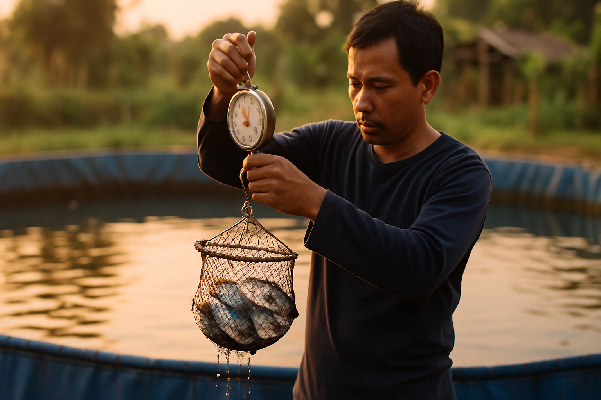

A multi-agent SEO content pipeline for aquaculture publishing
Seven specialized AI agents working in concert to research, write, illustrate, edit, and archive 60 bilingual SEO articles every month — fully autonomous, with human-grade quality and built-in topical-authority cluster strategy.
Client STP Aquaculture (Suri Tani Pemuka, JAPFA)Agency WEBARQ PromoteLanguages Bahasa Indonesia + EnglishScale 60 articles / month
7
Specialized agents
6 → 30
Keywords → articles / mo
~$13
Image gen cost / mo
40 min
Per-article wall-clock
01 · Overview
What this system does
Every month, WEBARQ Promote needs to produce SEO articles for six target keywords on the STP Aquaculture site — five articles per keyword, in both Bahasa Indonesia (canonical) and English (adapted). That's 60 deliverables per month, each 1,800–2,500 words, with original imagery, source-cited claims, accurate STP product mentions, and a fresh angle every time so the same keyword cluster doesn't cannibalize itself.
The pipeline runs on seven specialized AI agents. Each agent has a single job, a curated tool list, and an explicit quality bar. They hand off via versioned files in a structured monthly-run folder, so a human can inspect any stage at any time, and the work is reproducible.
Design principle: Each agent reads from a shared knowledge base (company facts, style guide, product matrix, SEO playbook) and writes structured outputs. The next agent reads those outputs as inputs. No agent invents facts that the knowledge base doesn't endorse — accuracy is enforced upstream.
02 · Architecture
The pipeline at a glance
The seven agents run in a directed sequence with one parallel fan-out (the two language writers run concurrently). Each box names the agent, its tier, and how many times it fires per monthly batch.
03 · Agents
The seven specialists
Each agent has a single role with a clearly-scoped responsibility, an opinionated quality bar, and an explicit tool list. Their full system prompts live in .claude/agents/<name>.md.
1
SEO Keyword Strategist
seo-keyword-strategist
Senior SEO strategist who understands Indonesian search behavior and the aquaculture niche. Generates five distinct article concepts per keyword each month, deduped against history so no angle is ever recycled.
Key responsibilities
Brainstorm ≥12 candidate angles, filter to 5 distinct intents
Capture SERP top 10, People Also Ask, Ahrefs volume + KD, GSC top queries
Anti-cannibalization check against articles_history/
Define hook, internal link plan, FAQ targets, AI Overview entities
opusAhrefs MCPWebFetchWebSearchGSC
2
Aquaculture SME Researcher
aquaculture-sme-researcher
Domain analyst with deep knowledge of Indonesian shrimp and tilapia cultivation. Turns concept briefs into fact-rich research dossiers — verified numbers, authoritative citations, STP product mapping, FAQ drafts.
Key responsibilities
Verify every numerical claim against ≥2 authoritative sources
Map article topic to correct STP products (per product matrix)
Draft 5–8 FAQ Q&As (40–80 words each) and a definition snippet
Flag uncertainties — never invent statistics
sonnetWebFetchWebSearchRead
3
Bahasa Indonesia Copywriter
seo-article-writer-id
Senior Indonesian copywriter producing 1,800–2,500-word pillar-style articles. Mirrors the Contoh Artikel Pilar's rhythm and voice — passes the "could a senior aquaculture journalist have written this?" test.
Definition snippet near top for AI Overview citation
opusReadWriteEdit
4
English Copywriter
seo-article-writer-en
Senior English copywriter producing the international trade-publication version. Adapts examples and idioms — never a literal translation. Preserves STP product names, place names, and pre-approved positioning lines verbatim.
Key responsibilities
Adapt regional context for global trade-publication audience
Use English numerics (period decimal, comma thousands)
Internal links point to /en/ paths only
Preserve image placeholder positions to share with ID version
Preserve E-E-A-T anchors (JARS, ARC, KAVAS, ISO 9001:2015)
opusReadWriteEdit
5
Aquaculture Image Generator
aquaculture-image-generator
Visual content director that designs precise prompts for each article, then generates 3 PNGs per article in parallel via OpenAI's gpt-image-1 (ChatGPT Images). Outputs alt-text and captions in both languages.
Key responsibilities
Design photographic / infographic / illustration prompts per placeholder
Size + quality matrix: hero 1536×1024 high; in-body 1536×1024 medium
Run all 3 images in parallel via batch helper (~1.5 min vs ~5 min sequential)
Same image set shared between .id.docx and .en.docx
Flag hard concepts (anatomy, branded items) with stock-photo fallback notes
sonnetgpt-image-1BashPowerShell
6
SEO Editor
seo-editor
Editorial quality gate. The last set of eyes before content commits. Catches AI tells, weak claims, broken SEO markers, and ID↔EN parity gaps — and fixes them in-place via the Edit tool.
The knowledge-base librarian. Runs automatically once the editor batch completes — commits articles with recommendation: approve to history, generates the bilingual .docx files with embedded images, and skips revise / reject articles for manual handling.
Key responsibilities
Filter on editor's recommendation field — verdict is binding
Compute angle hashes for future dedup (SHA1 of keyword + angle + sorted subtopics)
Append entries to articles_history/index.json (never overwrite)
Write per-article records under by_keyword/<slug>/
Convert .md → .docx via tools/md-to-docx.ps1 with embedded images
Surface conversion failures or skipped articles in the run report
haikuReadWriteEditBashpandoc
04 · Workflow
What happens during a monthly run
A full month spawns ~190 agent invocations across the 7 specialists. Each step writes to a versioned monthly-run folder so any artifact is inspectable mid-pipeline.
1
Strategist fans out per keyword
Six concurrent strategist runs (one per keyword) brainstorm angles, capture SERP + Ahrefs + GSC data, and produce 5 briefs per keyword = 30 total. Per-keyword research data is cached at monthly_runs/<YYYY-MM>/research/<keyword>.research.json so the 5 sibling briefs share one MCP-call pass.
6 parallel invocations~7 min per keywordOutput: 30 briefs
2
Researcher builds dossiers in parallel
Thirty concurrent researcher runs verify every claim from each brief against authoritative sources (KKP, FAO, BPS, jurnal perikanan, SEAFDEC). Each produces a dossier with verified facts, FAQ drafts, definition snippet, and STP product anchors mapped to article sections.
30 parallel invocations~6 min eachOutput: 30 dossiers
3
Both language writers run concurrently
Thirty Indonesian writer runs + thirty English writer runs fire in parallel — 60 total. Writers reference brief + dossier + style guide + product matrix. Anti-AI guardrails are baked into the system prompt; writers self-review against §5 of style_guide.md before saving.
60 parallel invocations~8 min eachOutput: 60 drafts (30 ID + 30 EN)
4
Image generator runs the batch helper
Thirty image-generator runs each build a manifest of 3 images, then invoke tools/generate-images-batch.ps1 which spawns concurrent Start-Job processes — three OpenAI API calls running in parallel per article. Same image set is shared between .id.docx and .en.docx.
Thirty editor runs each handle one ID+EN pair plus its image plan. Editor applies fixes in-place (anti-AI patterns, broken SEO markers, ID↔EN parity gaps), writes polished finals to final/, and produces a QC report with a binding recommendation field.
30 parallel invocations~10 min eachOutput: 60 final .md + 30 QC reports
6
Curator commits and converts
Single curator run scans every QC report. Articles with approve get history entries, per-article records, and a bilingual .docx pair with embedded images. Articles flagged revise or reject stay in final/ for the user to handle manually. No human approval gate — editor's verdict is binding.
1 sequential invocation~3 min totalOutput: history + 60 .docx + run report
05 · Foundation
Knowledge base & integrations
Shared knowledge base
Every agent reads from the same four reference files. Agents never invent facts the knowledge base doesn't endorse — accuracy is enforced upstream, once, instead of in each agent's prompt.
company_profile.md
STP facts, products with verified specs, certifications (ISO 9001:2015, TÜV Rheinland), positioning lines pre-approved for use in articles.
style_guide.md
Article anatomy, tone rules (ID + EN), anti-AI patterns to avoid (paragraph symmetry, cliché transitions), mandatory format mix per article.
product_matrix.md
Mapping of topic → product. The researcher picks anchors; the writer mentions products verbatim per spec; the editor verifies no SKUs were invented.
The pipeline relies on three external services. All are wired and tested in production for the pilot run.
Ahrefs MCP (includes Google Search Console)
One MCP server that exposes keywords-explorer, SERP-overview, site-explorer, rank-tracker, AND gsc-* tools. Strategist calls them to capture volume, KD, related terms, top SERP, and GSC-driven gap analysis.
OpenAI gpt-image-1 (ChatGPT Images)
Image generator calls the OpenAI Images API via tools/generate-image.ps1 (single image) and tools/generate-images-batch.ps1 (parallel batch). API key stored in .env (gitignored).
Pandoc 3.9.0.2 (portable)
Curator converts markdown → docx via tools/md-to-docx.ps1. Reference template (tools/reference.docx) matches the Contoh Artikel Pilar styling. Images auto-embedded at placeholder positions.
06 · Optimizations
Three pipeline optimizations
After the successful pilot run, three optimizations were applied to make the full monthly batch faster and cheaper without sacrificing quality.
⚙️
Model tiering per agent
Each agent now declares the cheapest model that can do its job via model: frontmatter. Judgment-heavy agents stay on Opus; structured-fact agents drop to Sonnet; the mechanical curator runs on Haiku.
Saves ~30–40% on model cost across a full monthly batch.
💾
Shared keyword research cache
The strategist's external data pull happens once per keyword per month and is cached at research/<keyword>.research.json. All 5 sibling briefs for the same keyword reuse the cache instead of re-running every Ahrefs / SERP / GSC call.
Eliminates 24 of 30 redundant MCP-call sets per month.
⚡
Parallel image generation
New batch helper tools/generate-images-batch.ps1 spawns concurrent Start-Job processes — three OpenAI calls running in parallel per article. Per-image failures are isolated; one rejection doesn't block the rest.
~3.5 min saved per article × 30 = ~1.7 hours per month.
07 · Pilot
One-article pilot results
Before scaling to a 30-article monthly batch, the full pipeline was validated end-to-end on a single article: "Cara Menghitung Kebutuhan Pakan Ikan Nila per 1000 Ekor sampai Panen" (calculation-focused, distinct from the existing Contoh Artikel Pilar's nutritional-strategy angle).
9 / 10
Editor quality score
2,403
ID words
1,799
EN words
19
Verified claims
Images generated by gpt-image-1 (used in the actual final .docx)
IMAGE_02 · Mid-article
Phase-card visualization for the worked-example table (deliberately text-free for ID + EN reuse)

IMAGE_03 · Sampling section
Editorial photo concept — biomass sampling for accurate FCR tracking
Pipeline wins observed during the pilot: the researcher pushed back on the brief's "4–6× per day" feeding frequency, correcting it to "3× max" based on Indonesian literature. The editor caught a parity drift where the ID writer used the wrong cousin landing page and synced it to mirror EN. The image generator chose deliberately text-free infographics so the same set works for both .id.docx and .en.docx — halving the image cost.
08 · Economics
Cost & performance projections
The pilot measured real costs and wall-clock times. Extrapolating to a full 30-article month with the three optimizations applied:
Item
Per article
Per month (30 articles)
Image generation (1 hero high + 2 in-body medium)
~$0.37
~$11
Pipeline wall-clock (with parallel image gen)
~40 min
Depends on parallelization across keywords
Ahrefs MCP calls (with shared research cache)
—
6 keyword research pulls (vs. 30 without cache)
Manual review burden
0 (fully autonomous)
Review final/ at your own pace
Note on Anthropic / model costs: Anthropic API costs depend on session-level token usage, which scales with article length and tool calls. Model tiering (Opus → Sonnet → Haiku per agent) is set up to minimize this; specific dollar figures depend on your Anthropic subscription and current pricing.
09 · Layout
Project file structure
Everything lives under D:\claude\seo-stp\. Agents read from the knowledge base, write into versioned monthly-run folders, and append to the queryable history.
These six guardrails are encoded in the agent prompts and the knowledge base. They protect quality at scale.
1
History check before strategy
The strategist must read articles_history/index.json and per-keyword records before proposing concepts. Duplicate-angle articles get rejected. Angle hashes (SHA1 over keyword + angle + sorted subtopics) make the dedup check unambiguous.
2
Accuracy over invention
No agent invents STP product names, specs, certifications, or facilities. Researcher verifies or flags. Editor verifies product specs match product_matrix.md verbatim. Fabricated SKUs fail QC.
3
No AI tells
Writer + editor enforce style_guide.md §5 — no symmetric paragraph blocks, no "Selain itu" repetition, no "Penting untuk dicatat" filler, no em-dash abuse, no bullet-only sections. Drafts that read AI-generated get fixed or bounced.
4
Editor verdict is binding
The curator commits only articles with recommendation: approve in their QC report. revise and reject articles stay in final/ for manual handling. The curator never overrides the editor.
5
External authority required
Every article cites at least two authoritative sources (KKP, FAO, BPS, jurnal perikanan, SEAFDEC). Researcher captures them in the dossier; writer embeds them inline; editor verifies they're present.
6
Bilingual parity
EN version covers the same key claims as ID — adapted for international readers, not literally translated. Editor's parity check catches divergences. Image placeholders match positions in both languages.
11 · Roadmap
Deferred to Phase 2
Two additions are scoped but not built — to be added after the article pipeline runs stably across 2+ months:
seo-analytics-reporter
Pulls GA4 + GSC + rank tracker, produces the monthly client report matching the WEBARQ Promote template. Same data sources as the strategist (Ahrefs MCP carries GSC), so connector reuse is straightforward.
seo-dashboard-builder
Looker Studio (or similar) live dashboard embed. Real-time keyword rank, traffic, and conversion tracking instead of monthly PDFs.